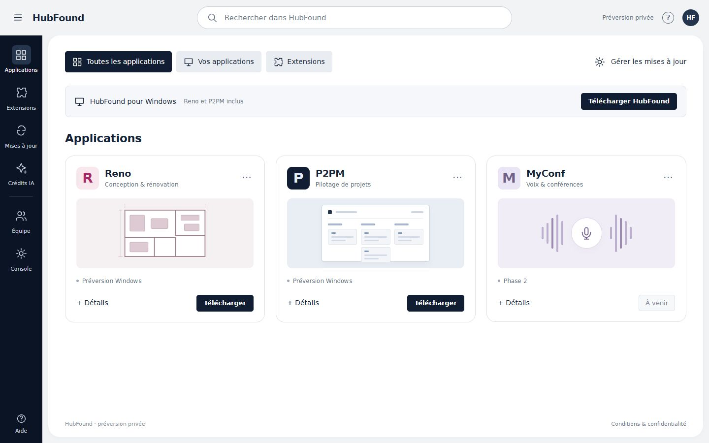

One suite, distinct uses
The catalogue and shared services avoid rebuilding access management for every product. Reno retains its planning and visualisation tools; P2PM retains its registers, relationships and documents.
PERSONAL PROJECT · Web applications
HubFound brings Reno, P2PM and MyConf, my multilingual translation extension, together in one catalogue. An initial Windows preview and account and AI services hosted in Switzerland support the applications. I am also developing a private web preview to test the latest changes without installation while keeping projects on the user’s device.

Click the screenshot to enlarge it. Interface shown in French.
HubFound is the shared entry point for my applications and extensions. Reno supports spatial design and interior planning; P2PM organises project scope, stakeholders, decisions, actions and documents. It also features MyConf, my browser extension for sharing multilingual conference translation with ChatGPT Voice. It uses the organiser’s ChatGPT session; listeners join the stream via a QR code and listen on their phones. MyConf is already visible in the HubFound catalogue; installation through the hub is planned for phase 2. Each product retains its interface and specialist tools.
The catalogue presents a card for each product. Search and filters make applications easy to find, while detailed explanations remain behind a dedicated action.
The initial Windows preview installs Reno and P2PM from the hub. Each application has its own window and shortcuts, without a browser toolbar. Electron preserves the existing web interfaces within a desktop application.
Projects and their attachments stay on the device. Reno uses the .renov.proj suffix and P2PM uses .p2pm.proj. The shared account identifies the person and their access rights; it does not synchronise projects between computers.
In P2PM, a request can draw on the conversation, records and selected documents. The assistant provides advice and proposes changes; applying them requires user approval or explicit completion permission for that request.
The catalogue and shared services avoid rebuilding access management for every product. Reno retains its planning and visualisation tools; P2PM retains its registers, relationships and documents.
The P2PM assistant goes beyond text answers: it prepares structured changes with a destination and before-and-after values. The local engine checks permissions, relationships and conflicts before writing, and can refuse an undo that would overwrite later work.
The server manages identity, permissions and AI usage. Business content remains local, apart from material authorised for an AI request. Drawing an outline manually in Reno is deterministic and requires no AI call.
Example: the path of a P2PM request. Interfaces, platform services and the AI provider have separate responsibilities.
P2PM prepares the project, documents and conversation. Local extraction and filtering produce the request context.
The session, application access and available budget are checked. A reservation precedes the provider request; the credential never leaves the server.
The result is validated. P2PM locally restores authorised identities, displays proposals and keeps the history in the project.
The usage ledger prevents a page reload from resubmitting the same operation. An uncertain outcome retains its reservation until reconciled rather than being incorrectly treated as a free failure.
P2PM runs YalenLabs/yalen-pii-ner-multilingual through ONNX Runtime and WebAssembly on the CPU. It detects people, organisations and locations. Additional rules handle contact details and identifiers, known records and explicitly selected @ mentions.
Recognised information is replaced with opaque aliases before transmission. The mapping stays local so the application can present a readable response. Namesakes are not arbitrarily merged, and a preview allows the prepared content to be checked.
The vault uses AES-GCM with separate account and project scopes. It protects reversible mappings; it does not anonymise all project data or provide full encryption of the web profile.
French/English Tesseract OCR and PDF, Word or Excel extraction also run locally in P2PM. The original document is not sent as a fallback if extraction fails. Entity recognition may miss a name or mask a business term: review remains necessary, and transmission is refused if the filter is unavailable.
I selected Infomaniak to host shared services in Switzerland and provide an environment I can administer and restore. The private API runs in Docker containers on Ubuntu; Caddy provides HTTPS access. Account data and the usage ledger are stored in SQLite.
Platform data is stored in encrypted archives transferred to Swiss Backup using Restic. The procedure also checks an isolated restoration. It is designed to recover accounts, permissions and request accounting; it does not collect users’ projects.
Local projects have their own export workflow. The web version in preparation adds portable archives protected by a recovery passphrase. These web formats remain distinct from current Windows formats; clearing browser storage can delete work that has not been exported.
Swiss hosting for HubFound services does not mean that all AI provider processing takes place in Switzerland. The web preview is designed with its own accounts, sessions, database and application secrets; external activation is still pending.
I turn requests into focused changes in working copies of the hub and applications. Source code and release decisions remain separate from user profiles.
Tests cover permissions, budgets, files, account changes, Reno geometry and controlled application of P2PM proposals. Visual trials complement these checks.
Builds use locked dependencies and file inventories. Electron checks cover ASAR archives, their hashes, renderer isolation and the absence of provider credentials from packages.
Private acceptance testing precedes a stable release. Server updates retain a previous image for rollback. The complete desktop update workflow, including consent and restart, remains to be finalised before stable distribution.
The development workbench can use fictitious data with a simulated remote response and real local engines. Authenticated integration and installer acceptance are separate stages: a local demonstration is not presented as a release.
Status as of 27 November 2026. Features evolve in increments; an older installable preview does not automatically contain the latest improvements.
HubFound is still a private preview. The latest web versions have not been published for external testers. Windows signing, macOS, MyConf installation, billing and complete enterprise workflows remain to be finalised. Local controls reduce sensitive information exposure without guaranteeing perfect detection.
I design and develop HubFound with AI assistance in Codex: the catalogue experience, application ports, local storage, accounts, the AI gateway, deployment and backups. I connect product decisions to their implementation, then check the workflows through tests and hands-on application trials.
Turn several independent projects into a coherent suite: find applications and access rights in one place, keep documents locally, and evolve each product through a controlled testing and release workflow.